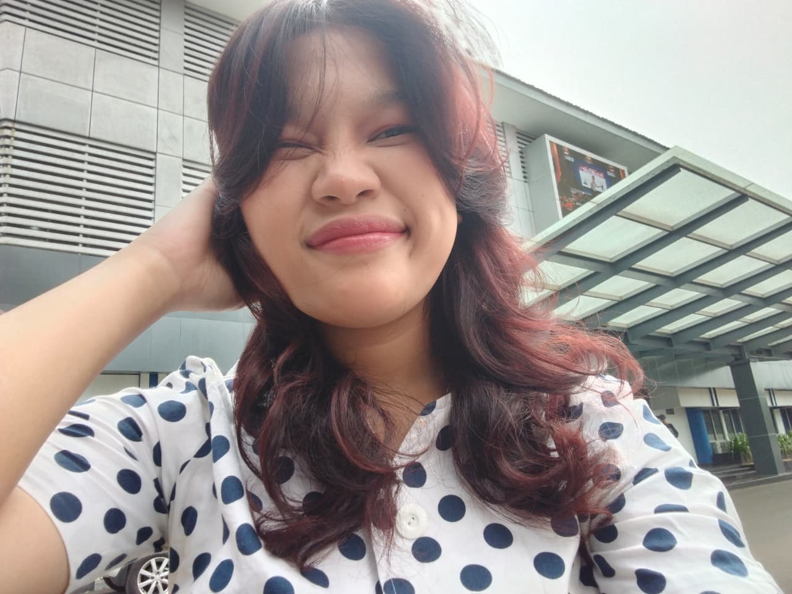

The person behind the crown
About Me
Every princess has her own story. Here is a little piece of mine.
My Story

Halo! Aku Arin, seorang mahasiswi Sistem Informasi di Budi Luhur University. Aku tertarik pada teknologi, desain, dan hal-hal kreatif. Aku senang mempelajari hal baru dan mengembangkan kemampuan melalui pengalaman.
I believe that passion, creativity, and consistency can take us far. I am excited to keep learning, growing, and exploring new opportunities.
Personal growth is not only about academic achievements, but also about finding balance between responsibilities, passions, and the things that bring meaning to life. I am eager to keep learning, developing my skills, and exploring my potential without leaving behind the hobbies and talents that make me who I am. I believe that maintaining this balance allows me to stay creative, productive, and open to new experiences throughout my journey.
Starting from creativity, growing into a digital experience.
Ketertarikan Aku pada dunia kreatif tumbuh melalui pengalaman tiga tahun di bidang PDD (Publikasi, Dekorasi, dan Dokumentasi) serta perjalanan Aku sebagai dancer. Melalui PDD, Aku belajar mengeksplorasi visual dan menyampaikan ide melalui desain, sementara dunia tari mengajarkan aku tentang ekspresi, kreativitas, kerja sama, dan keberanian untuk menampilkan diri.
Pengalaman tersebut membuat Aku semakin tertarik pada bagaimana sebuah karya dapat menyampaikan pesan dan menciptakan kesan. Ketertarikan ini membawa Aku mengenal UI/UX Design dan Web Development, bidang yang memungkinkan Aku menggabungkan kreativitas visual dengan teknologi. Aku senang mengeksplorasi ide, merancang antarmuka yang menarik dan mudah digunakan, serta mengembangkan website yang fungsional.
Saat ini, Aku terus mengembangkan kemampuan dalam desain dan pengembangan web dengan membawa perspektif kreatif dari dunia desain dan tari. Bagi Aku, desain bukan sekadar tentang tampilan, tetapi juga tentang menciptakan pengalaman yang nyaman, intuitif, dan bermakna. Aku ingin menghasilkan karya digital yang tidak hanya menarik secara visual, tetapi juga memberikan pengalaman berkesan bagi penggunanya.